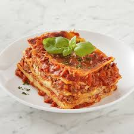

Meat Lasagna

Description
A popular recipe for home-cooked meat lasagna, as found on the Allrecipes website.
It requires about 30 min prep time, 2.5 hours cook time, and 15 min additional time.
Ingredients
- Meat: Italian sausage and ground beef
- Onion and garlic: an onion and two cloves of garlic, cooked with the meat
- Tomato products: 1 can crushed tomatoes, 2 cans tomato sauce, 2 cans tomato paste
- Sugar: 2 tbsp white sugar
- Spices and seasonings: fresh parsley, dried basil leaves, salt, Italian seasoning, fennel seeds, black pepper
- Lasagna noodles: store-bought or homemade
- Cheeses: parmesan, mozzarella, ricotta
- Egg: 1 egg
Steps
- Make the meat sauce.
- Cook the noodles.
- Make the ricotta mixture.
- Layer the lasagna according to the recipe instructions.
- Cover with foil and bake.
- Let the lasagna rest before serving.